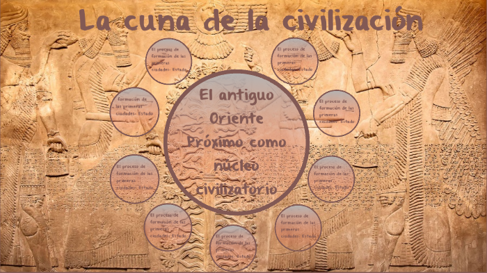

Como fue de importante Mesopotania para la historia de la humanidad
Mesopotamia fue una de las civilizaciones más importantes en la historia de la humanidad, y se le conoce como la cuna de la civilización. Surgió entre los ríos Tigris y Éufrates, en la región que actualmente corresponde a Irak y partes de Siria, Irán y Turquía. Su ubicación favoreció el desarrollo agrícola, gracias a la fertilidad del terreno y la disponibilidad de agua, lo que permitió el crecimiento de asentamientos estables y, eventualmente, de grandes ciudades.
Uno de los aportes más trascendentales de Mesopotamia fue la invención de la escritura cuneiforme, la primera forma de escritura conocida. Este avance permitió registrar leyes, transacciones comerciales, literatura y conocimientos científicos, y fue fundamental para la organización social y política. También se desarrollaron en esta región las primeras ciudades-estado, como Ur, Uruk y Babilonia, que contaban con estructuras administrativas complejas y jerarquías sociales definidas. Los mesopotámicos hicieron importantes contribuciones en matemáticas, astronomía y arquitectura. Utilizaban un sistema numérico en base 60, del cual derivan nuestras divisiones de tiempo. Estudiaron los astros, crearon calendarios y levantaron monumentales construcciones como los zigurats. Además, implementaron sistemas de riego que transformaron el paisaje y permitieron una agricultura más eficiente, base del crecimiento económico.
En el ámbito legal y político, Mesopotamia también dejó un legado duradero. El Código de Hammurabi es uno de los primeros conjuntos de leyes escritos y conocidos, y refleja un sistema judicial relativamente avanzado para su época. La religión jugó un papel central en su cultura, con dioses relacionados con la naturaleza y la vida cotidiana, y con templos que eran también centros administrativos. En conjunto, Mesopotamia marcó el inicio de muchos aspectos esenciales de la vida civilizada: escritura, gobierno, ley, comercio, ciencia y religión organizada. Su influencia se extendió a otras culturas del mundo antiguo y sentó las bases de muchas instituciones que aún existen hoy.
Porque es considerada la cuna de la civilizacion?
Mesopotamia es considerada la cuna de la civilización porque fue el primer lugar en la historia donde surgieron formas organizadas y complejas de vida en sociedad. Allí aparecieron las primeras ciudades, como Uruk y Ur, con estructuras políticas, económicas y religiosas definidas. Fue también en Mesopotamia donde se inventó la escritura cuneiforme, un avance fundamental que permitió registrar leyes, actividades comerciales, conocimientos y creencias, marcando el paso de la prehistoria a la historia. Además, en esta región se desarrollaron los primeros sistemas legales, como el Código de Hammurabi, junto con innovaciones en agricultura, arquitectura, astronomía y matemáticas. El uso del riego para cultivar tierras fértiles, la construcción de templos y palacios, y el establecimiento de jerarquías sociales y gobiernos organizados son características fundamentales de una civilización. Todo esto ocurrió por primera vez en Mesopotamia, lo que la convierte en el punto de partida del desarrollo de sociedades complejas y urbanizadas.

Mesopotamia fue el primer lugar conocido donde los seres humanos pasaron de vivir en pequeñas comunidades agrícolas a formar sociedades urbanas complejas. Esto ocurrió alrededor del 3500 a.C., mucho antes que en otras regiones del mundo. Las condiciones geográficas, especialmente la fertilidad del terreno entre los ríos Tigris y Éufrates, facilitaron el desarrollo de una agricultura productiva. Esto permitió que las personas pudieran producir excedentes de alimentos, lo que a su vez liberó a algunos individuos de las tareas agrícolas y les permitió especializarse en otras actividades como la construcción, la religión, la administración o el comercio. La invención de la escritura cuneiforme marcó un cambio decisivo, ya que permitió registrar información de manera permanente. Esto facilitó la administración de los recursos, la creación de leyes, la recolección de impuestos y el desarrollo del comercio. Fue también en Mesopotamia donde surgieron los primeros gobiernos organizados, con reyes, leyes escritas y sistemas de justicia. El Código de Hammurabi, creado alrededor del año 1750 a.C., es uno de los ejemplos más antiguos de leyes codificadas y muestra cómo los mesopotámicos pensaban sobre la justicia, la propiedad y la organización social.
Otro aspecto importante fue el desarrollo de las primeras ciudades del mundo, como Uruk, que llegó a tener decenas de miles de habitantes. Estas ciudades tenían templos, palacios, murallas, mercados y sistemas de alcantarillado, lo que indica un nivel alto de planificación urbana. Además, la religión mesopotámica estaba estrechamente ligada al poder político, ya que los reyes afirmaban gobernar en nombre de los dioses, y los templos también funcionaban como centros económicos y administrativos. En cuanto a los avances científicos, los mesopotámicos hicieron grandes progresos en astronomía, matemáticas y medicina. Desarrollaron un calendario lunar, sistemas de medición y construcciones arquitectónicas complejas como los zigurats, que eran templos escalonados dedicados a sus dioses. También fueron pioneros en el comercio a larga distancia, estableciendo rutas comerciales con otras regiones como el Valle del Indo y Anatolia. Por todas estas razones —el nacimiento de las ciudades, la escritura, el gobierno, la ley, la religión organizada y la ciencia—, Mesopotamia es considerada el primer modelo de civilización compleja, y por eso se le llama la cuna de la civilización. Lo que comenzó allí sentó las bases para el desarrollo de otras civilizaciones posteriores, como Egipto, Grecia y Roma.